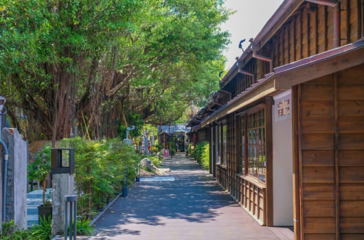
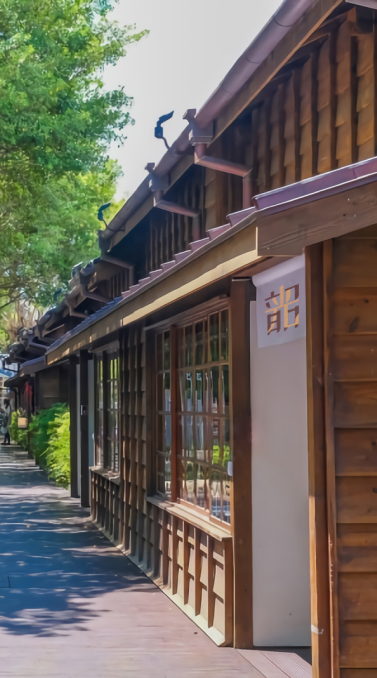
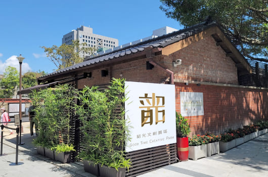
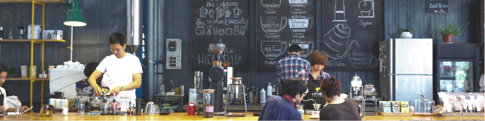

ABOUT US
關於韶光

韶光文創園區成立的初衷
來自一份「溫暖」的心意
希望來此的遊客能體會單純美好的幸福
並在駐足的過程中
創造只屬於自己的溫馨時光與回憶


我們致力於服務展方及熱愛展覽的民眾
希望以便捷的方式讓展方無負擔的舉辦展覽
並減少與第三方無謂的溝通成本
同時也能讓民眾盡興的參觀展覽及園區
以達推廣展覽的目的

以打造溫暖為前提，從品牌進駐、展覽活動、假日市集、展場租借衍生不同的理念並付諸行動， 藉以提供民眾更多元的服務與體驗，期盼在我們用心耕耘之下， 讓韶光不僅是一個文創天地，更是能提升文學素養、並療癒大眾心靈的幸福園區
GETTING HERE
交通資訊
公車
搭乘521、685、685(經吉林路)、復興幹線
至捷運南京復興站下車，步行約3分鐘即可抵達
至捷運南京復興站下車，步行約3分鐘即可抵達
捷運
搭乘捷運至南京復興站（8號出口）
沿南京東路三段步行約5分鐘即可抵達
沿南京東路三段步行約5分鐘即可抵達
自行開車
行駛國道一號於23B圓山交流道下
→松江路行駛4公里
→左轉民權東路二段行駛1.2公里
→右轉進入復興北路行駛 1.2 公里
→右轉進入南京東路三段
→抵達韶光文創園區
→松江路行駛4公里
→左轉民權東路二段行駛1.2公里
→右轉進入復興北路行駛 1.2 公里
→右轉進入南京東路三段
→抵達韶光文創園區
停車資訊
安婷停車場俠隱場
地址：台北市中山區遼寧街139號
連絡電話：02-2542-0819
嘟嘟房富邦遼寧大樓站
地址：台北市中山區遼寧街177號
電話：02-2655-0818
地址：台北市中山區遼寧街139號
連絡電話：02-2542-0819
嘟嘟房富邦遼寧大樓站
地址：台北市中山區遼寧街177號
電話：02-2655-0818
CONTACT US
聯絡我們